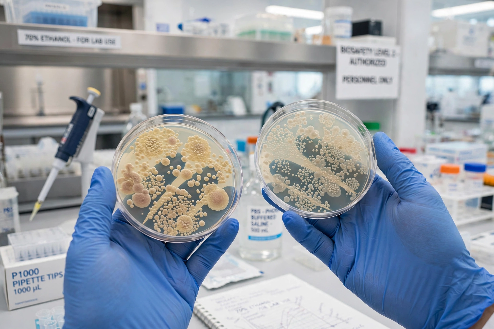

Alternatives to animal testing
| Alternatives to animal testing | |
|---|---|
 | |
| Cell-culture (in vitro) methods are a major class of alternatives | |
| Framework | The Three Rs: Replacement, Reduction, Refinement |
| Key methods | In vitro cell culture, computer (in silico) modelling, human volunteers, organ-on-a-chip |
Alternatives to animal testing are the development and use of research methods that replace, reduce, or refine the use of animals in scientific experimentation and product testing. The guiding framework, known as the Three Rs, was proposed by W. M. S. Russell and R. L. Burch in their 1959 book The Principles of Humane Experimental Technique: Replacement of animals with non-animal methods, Reduction of the numbers used, and Refinement of procedures to minimise suffering.
Methods
In vitro methods use cells and tissues grown in culture — including reconstructed human skin models used for irritation and corrosion testing — in place of live animals. In silico methods use computer models and databases of known chemical properties, such as (Q)SAR structure–activity relationships, to predict toxicity. Microdosing studies in human volunteers, advanced imaging, and "organ-on-a-chip" microfluidic devices that mimic human physiology are also used. Regulatory bodies such as the European Union Reference Laboratory for Alternatives to Animal Testing (EURL ECVAM) validate and promote such methods.
Legislation
The European Union banned the testing of finished cosmetic products on animals in 2004, ingredient testing in 2009, and the marketing of animal-tested cosmetics in 2013. Other jurisdictions, including India, Israel, Norway, and several U.S. states, have adopted similar restrictions, while full replacement in pharmaceutical and chemical safety testing remains an active area of policy debate.